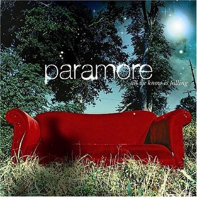
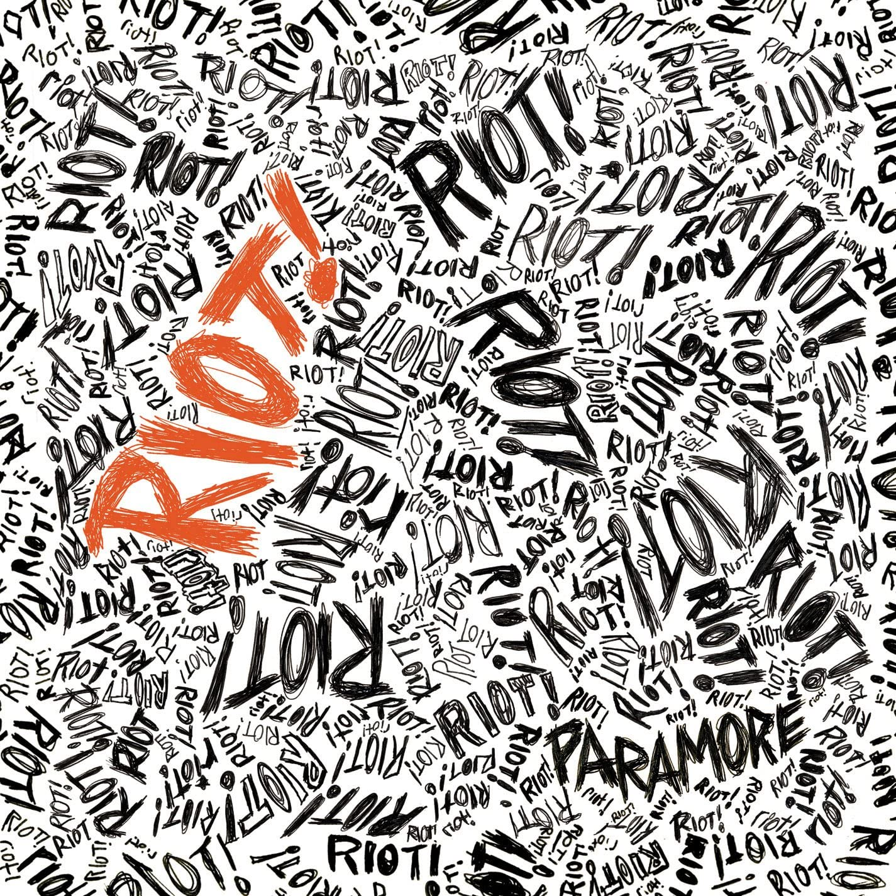

| Discografia do Paramore |
| Album |
Músicas |
Ano |
Formação |
Teste |
|  |
- All We Know
- Pressure
- Emergency
- Brighter
- Here We Go Again
- Never Let This Go
- Whoa
- Conspiracy
- Franklin
- My Heart
|
|
- Hayley Williams – vocal
- Josh Farro – guitarra solo, vocal de apoio
- Zac Farro – bateria
- John Hembree – baixo
- Jason Bynum – guitarra rítmica, vocal de apoio
|
|  |
- For a Pessimist, I'm Pretty Optimistic
- That's What You Get
- Hallelujah
- Misery Business
- When It Rains
- Let the Flames Begin
- Miracle
- Crushcrushcrush
- We Are Broken
- Fences
|
|
- Hayley Williams – vocal, piano, teclado, guitarra
- Josh Farro – guitarra solo e ritmica, backing vocal
- Jeremy Davis – baixo, backing vocal
- Zac Farro – bateria
- Taylor York – guitarrista adicional
|
 |
- Careful
- Ignorance
- Playing God
- Brick by Boring Brick
- Turn It Off
- The Only Exception
- Feeling Sorry
- Looking Up
- Where the Lines Overlap
- Misguided Ghosts
- All I Wanted
- Decode (faixa bônus)
|
|
- Hayley Williams – Vocal
- Josh Farro – Guitarra, Backing vocal
- Zac Farro – Bateria, percussão
- Jeremy Davis – Baixo
- Taylor York – Guitarra
|
 |
- Careful
- Ignorance
- Playing God
- Brick by Boring Brick
- Turn It Off
- The Only Exception
- Feeling Sorry
- Looking Up
- Where the Lines Overlap
- Misguided Ghosts
- All I Wanted
- Decode (faixa bônus)
|
|
- Hayley Williams – vocais principais, vocais de apoio, teclado, piano
- Jeremy Davis – guitarra baixo, vocais de apoio
- Taylor York – guitarra, teclado, ukulele, programação, bateria em "Tell Me It's Okay"
|
| |
- Hard Times
- Rose-Colored Boy
- Told You So
- Forgiveness
- Fake Happy
- 26
- Pool
- Grudges
- Caught in the Middle
- Idle Worship
- No Friend
- Tell Me How
|
|
- Hayley Williams – vocais principais, vocais de apoio, teclado, percussão, composição
- Taylor York – guitarra, teclado, percussão, marimba, produção, engenharia, mixagem, programação, composição, vocais de apoio
- Zac Farro – bateria, teclado, percussão, sinos, composição, vocais em "Grudges", vocais de apoio
|